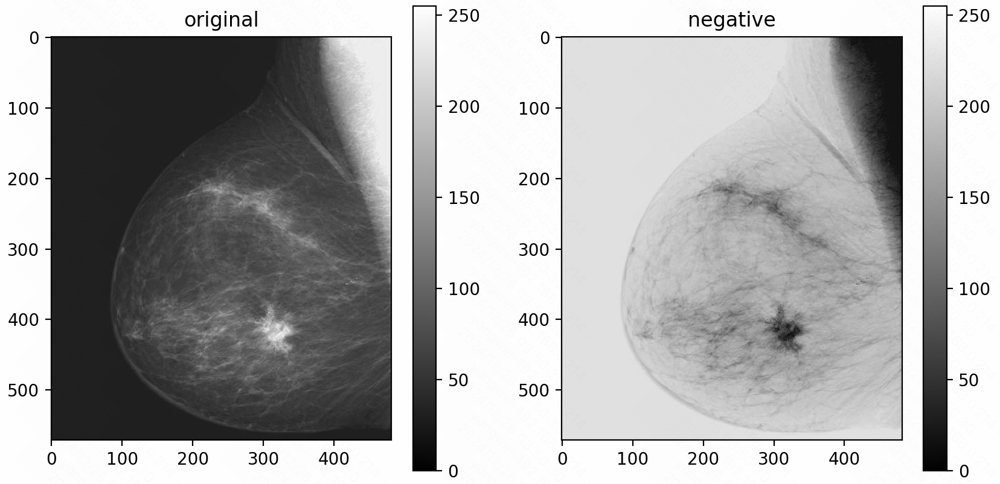
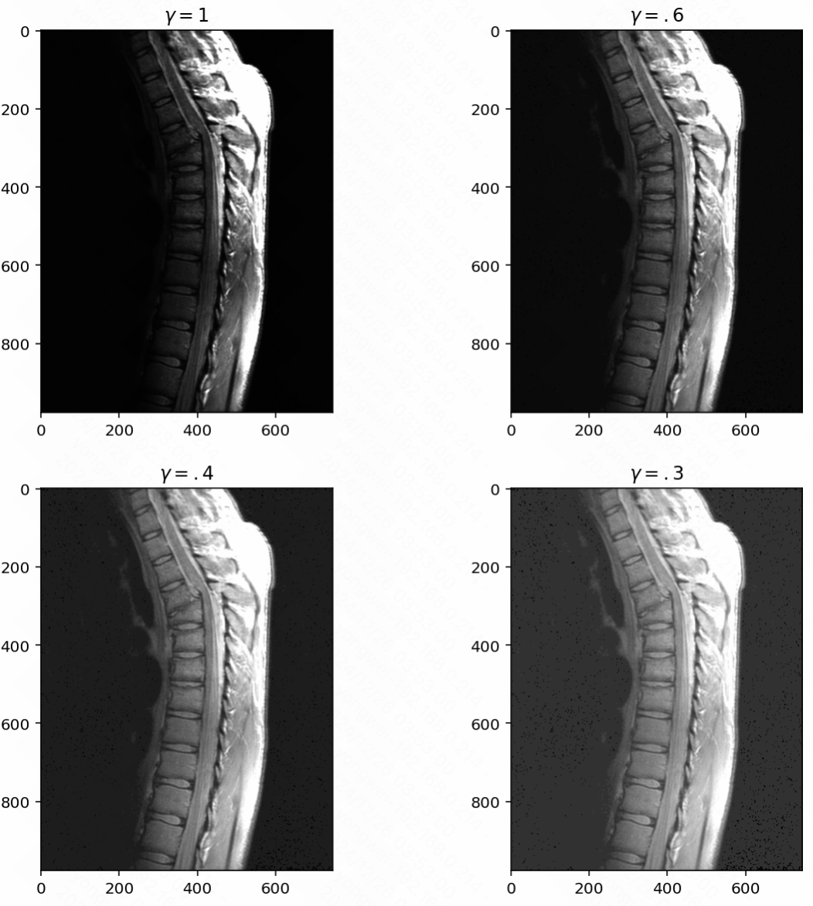
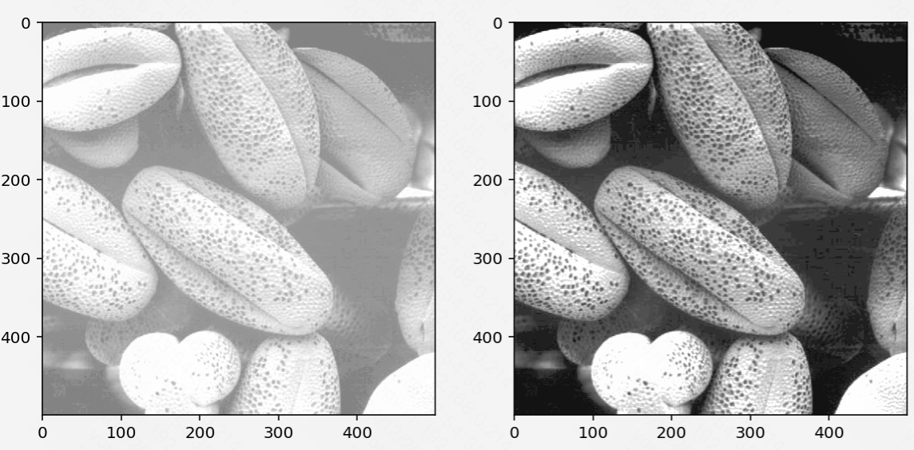
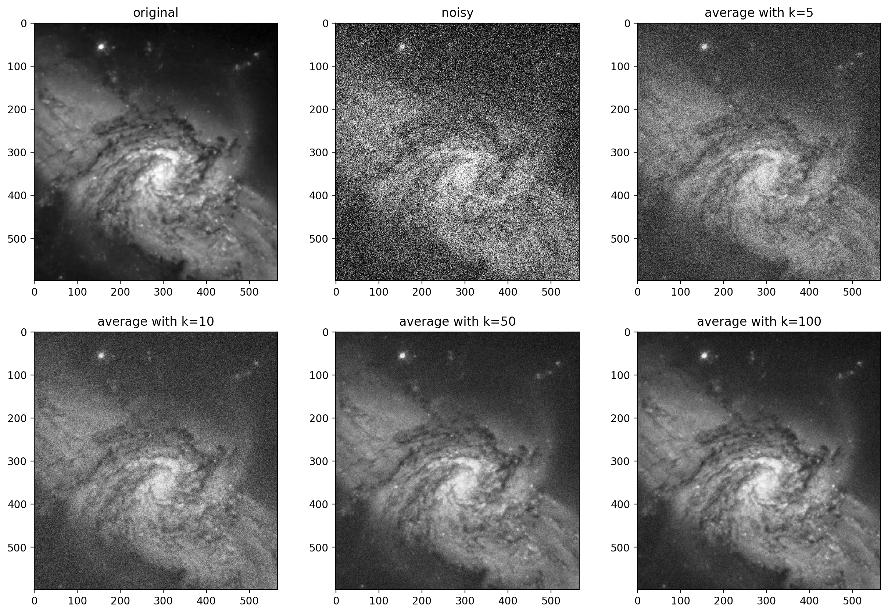

Image Processing - Image Enhancement & Restoration
Image Enhancement
Key Concepts
-
Histogram
A histogram represents the distribution of pixel intensity values in an image. It provides a visual summary of how light or dark an image is and helps us understand its contrast and brightness characteristics.
-
Cumulative Histogram
The cumulative histogram is an extension of the basic histogram. Instead of showing individual intensity frequencies, it shows the cumulative frequency of intensities. This is particularly useful in operations like histogram equalization, where we aim to redistribute intensity values for better contrast.
Image enhancement is the process of improving the visual quality of an image to make it more suitable for a specific application. These techniques are primarily divided into spatial domain processing and frequency domain processing.
Spatial Domain Process
Two principal categories of spatial processing are intensity transformations and spatial filtering.
-
Intensity Transformations
Intensity transformations are pixel-based operations that adjust brightness, contrast, or other pixel properties.
-
Grey Level Transformation
-
Image Negative: Inverts the pixel intensities, transforming bright areas into dark and vice versa. This is particularly useful in applications like medical imaging.
1
util.invert(img) # image negative
-
Log Transformation: Expands the dynamic range of dark regions in an image, making details more visible.
-
Gamma (Power-Law) Transformation: Corrects non-linear intensity variations, often used in display systems.
1
2
3image6 = image**.6
image4 = image**.4
image3 = image**.3
-
-
Histogram Equalization
A popular method to improve contrast by redistributing intensity values. It’s particularly effective for images with poor lighting or low contrast.
1
image1_eq = img_as_ubyte(exposure.equalize_hist(image1))
-
Local Enhancement
Instead of applying transformations globally, local enhancement focuses on specific regions of an image, enabling finer control over the output.
-
-
Spatial Filtering
Spatial filtering involves modifying pixel values based on their surrounding neighbors. This is where techniques like image smoothing and sharpening come into play.
-
Smoothing Filters (Low-pass Filters):
These filters reduce noise by averaging neighboring pixels, resulting in a blur effect. They are ideal for removing minor imperfections but may reduce sharpness. -
Sharpening Filters (High-pass Filters):
These filters enhance edges and fine details by emphasizing intensity changes. Applications include edge detection and feature extraction. -
Combining Enhancement Methods:
Often, multiple enhancement techniques are combined for optimal results. For example, smoothing can be applied to reduce noise before sharpening to enhance edges.
Arithmetic operations like addition, subtraction, multiplication, and division can also be used to manipulate images.
-
Frequency Domain Process
Unlike spatial domain processing, frequency domain techniques focus on the frequency components of an image rather than its pixels. By transforming an image into the frequency domain (using tools like the Fourier Transform), we can manipulate specific frequency ranges to achieve desired effects.
-
Frequency Domain Filtering
Frequency domain filtering differs from spatial filtering in that it targets specific frequency components:
- Low frequencies represent smooth regions of the image.
- High frequencies correspond to edges and fine details.
-
Unsharp Masking
Unsharp masking is a method that enhances image sharpness by amplifying high frequencies. It works by subtracting a blurred version of the image (low frequencies) from the original image, leaving behind the high-frequency details.
-
Homomorphic Filtering
Homomorphic filtering is a technique that simultaneously enhances contrast and reduces noise. It separates the illumination and reflectance components of an image, allowing for targeted adjustments.
Image Restoration
While image enhancement focuses on improving the visual appearance of an image, image restoration takes a different approach. Restoration aims to recover an image’s original quality by reversing known degradations. The goal is to reconstruct the image as closely as possible to its true form, often requiring a deeper understanding of the degradation process.
Key Concepts
-
Enhancement vs. Restoration
Aspect Image Enhancement Image Restoration Objective Improves subjective visual quality Reconstructs the original image Focus Emphasis on human perception Focus on mathematical models of degradation Approach Heuristic techniques (e.g., contrast adjustment, smoothing) Algorithmic corrections (e.g., noise removal, deblurring) Use Case Enhancing medical images for better viewing Restoring damaged satellite images -
Noise Models
Noise is often introduced into images during acquisition, transmission, or processing. Understanding the type of noise is critical for selecting the appropriate restoration technique. Some common noise models include:
- Gaussian Noise: A random distribution of intensity values, typically caused by sensor limitations.
- Salt-and-Pepper Noise: Appears as random black and white pixels, often caused by transmission errors.
- Poisson Noise: Associated with photon counting in low-light conditions, such as in microscopy or astronomy.
- Periodic Noise: Results in periodic patterns, often caused by electrical interference during image acquisition.
Each of these noise models requires a tailored restoration strategy. Let’s explore two primary approaches: spatial filtering and frequency domain filtering.
Restoration in the presence of Noise only - Spatial filtering
When noise is the primary degradation factor, spatial filtering can effectively suppress it while preserving important image details.
- Mean Filters
-
Averaging Filter: Reduces noise by calculating the mean of neighboring pixels. While it smooths the image, it can blur edges.
1
2
3
4
5
6
7
8
9
10
11
12
13
14
15
16noisy_images_5 = np.zeros((image.shape[0], image.shape[1], 5), dtype=np.float64)
noisy_images_10 = np.zeros((image.shape[0], image.shape[1], 10), dtype=np.float64)
noisy_images_50 = np.zeros((image.shape[0], image.shape[1], 50), dtype=np.float64)
noisy_images_100 = np.zeros((image.shape[0], image.shape[1], 100), dtype=np.float64)
for i in range(5):
noisy_images_5[:, :, i] = util.random_noise(image, var=0.1)
for i in range(10):
noisy_images_10[:, :, i] = util.random_noise(image, var=0.1)
for i in range(50):
noisy_images_50[:, :, i] = util.random_noise(image, var=0.1)
for i in range(100):
noisy_images_100[:, :, i] = util.random_noise(image, var=0.1)
mean_image_5 = np.mean(noisy_images_5, axis=2)
mean_image_10 = np.mean(noisy_images_10, axis=2)
mean_image_50 = np.mean(noisy_images_50, axis=2)
mean_image_100 = np.mean(noisy_images_100, axis=2) -
Weighted Mean Filter: Assigns higher weights to closer pixels, reducing blur while maintaining noise suppression.
- Median Filters
- Particularly effective for salt-and-pepper noise, median filters replace the central pixel in a sliding window with the median value of its neighbors. This preserves edges better than mean filters.
- Adaptive Filters
- Adaptive filters adjust their behavior based on local image characteristics, such as noise variance. They are versatile and effective for non-uniform noise.
Spatial domain techniques are often straightforward to implement, but they may struggle with complex noise patterns, such as periodic noise. For such cases, frequency domain filtering is more appropriate.
Periodic Noise By Frequency Domain Filtering
Periodic noise often manifests as sinusoidal patterns or regular distortions in an image. Frequency domain filtering provides an effective solution by isolating and removing these patterns.
-
Band-Stop Filtering
Band-stop filters are designed to suppress specific frequency ranges. For periodic noise:
-
The noise frequency is identified in the Fourier Transform.
-
A band-stop filter is applied to block these specific frequencies while preserving the rest of the image.
-
-
Notch Filters
A notch filter is a more targeted approach to periodic noise removal. It zeroes out frequencies corresponding to the noise spikes while leaving other frequencies untouched, ensuring minimal impact on the image quality.
-
Homomorphic Filtering
Homomorphic filtering, while often used for image enhancement, can also be applied to combat periodic noise. By separating illumination and reflectance components, it can suppress unwanted interference patterns.
Periodic noise removal through frequency domain techniques is especially useful in scenarios like:
- Restoring scanned documents affected by electrical interference.
- Processing satellite images with regular transmission noise.